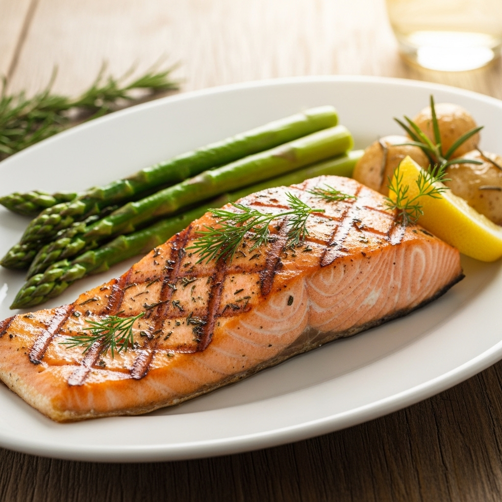

Grilled Salmon

Description
This grilled salmon recipe is a healthy and flavorful dish that is easy to
prepare.
Ingredients
- 4 salmon fillets
- 2 tablespoons olive oil
- 1 lemon, juiced
- 2 cloves garlic, minced
- Salt and pepper to taste
- Fresh herbs (like dill or parsley) for garnish
Instructions
- Preheat your grill to medium-high heat.
-
In a small bowl, mix the olive oil, lemon juice, minced garlic, salt,
and pepper.
-
Brush the salmon fillets with the olive oil mixture on both sides.
- Place the salmon fillets skin-side down on the grill.
-
Grill for about 6-8 minutes per side, or until the salmon is cooked
through and flakes easily with a fork.
- Remove from the grill and let rest for a few minutes.
- Garnish with fresh herbs before serving.
Home